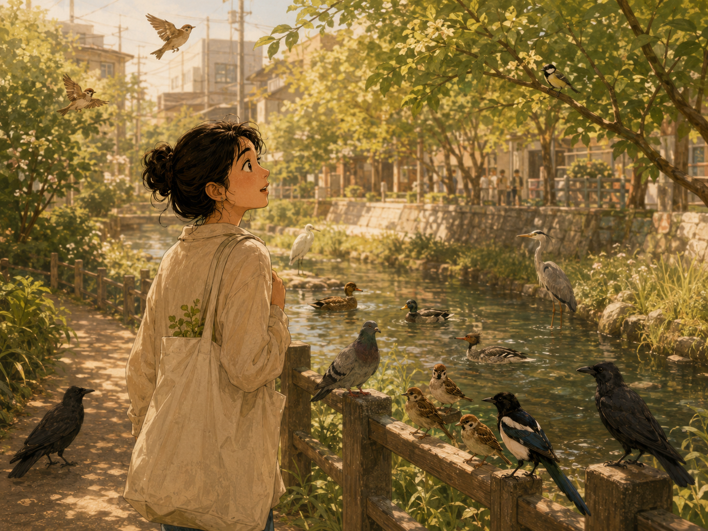

동네 주민이 많아졌다

우리 동네에 새가 많아졌다.
동네 주민 비둘기는 기본이고, 오리, 참새, 까치, 까마귀, 백로, 왜가리, 박새에 생전 처음 만나본 비오리까지. 어느 순간부터 산책길이 작은 조류도감처럼 느껴진다.
예전에는 새를 거의 구분하지 못했다. 작고 갈색이면 참새, 크고 검으면 까마귀, 물 위에 떠 있으면 오리라고 생각했다. 그 정도면 충분했다. 새의 이름을 몰라도 출근은 할 수 있었고, 이름을 안다고 월급이 오르는 것도 아니었다. 세상에는 알아야 할 것이 너무 많았고, 새 이름은 늘 우선순위 밖에 있었다.
그런데 어느 날부터 하나씩 눈에 들어오기 시작했다.
물가에 길게 서 있는 새는 백로였고, 비슷해 보이지만 목과 자세가 다른 새는 왜가리였다. 전깃줄 위에서 짧게 움직이는 작은 새는 박새였고, 물속을 미끄러지듯 가르는 낯선 새는 비오리였다. 이름을 알고 나니 풍경이 조금 달라졌다. 전에는 ‘새 몇 마리’였던 장면이 이제는 각자의 모습으로 나뉘었다.
이름을 안다는 건 대상을 더 많이 보는 일인지도 모른다.
그전까지 비둘기는 그냥 비둘기였다. 사람 가까이에 너무 익숙하게 다가오고, 벤치 주변을 어슬렁거리는 흔한 새. 하지만 자세히 보면 비둘기들끼리도 걸음이 다르고, 겁이 많은 녀석과 유난히 뻔뻔한 녀석이 있었다. 까치는 늘 바빠 보였고, 까마귀는 생각보다 조심스러웠다. 오리는 물 위에서는 태연했지만 물밑에서는 부지런히 발을 움직이고 있었다.
이런 걸 보고 있으면 새가 많아진 것인지, 내가 이제야 보기 시작한 것인지 헷갈린다.
실제로 동네에 새가 늘었을 수도 있다. 물길이 생겼고, 나무가 자랐고, 먹을 것이 많아졌을 수도 있다. 하지만 어쩌면 새들은 오래전부터 그 자리에 있었을 것이다. 나는 늘 같은 길을 다니면서도 휴대폰을 보거나 머릿속 일정을 정리하느라 보지 못했을 뿐이다.
사람은 보고 싶은 것만 본다고 한다. 더 정확히는, 볼 여유가 있는 것만 보는 것 같다. 바쁠 때의 나는 신호등과 도착 시간만 봤다. 늦지 않는 것이 중요했고, 목적지에 빨리 도착하는 것이 하루의 성공이었다. 그 길 위에 어떤 새가 앉아 있었는지는 중요하지 않았다.
요즘은 걸음이 조금 느려졌다. 새소리가 들리면 잠깐 멈추고, 물가에 낯선 움직임이 보이면 눈으로 따라간다. 그러다 생전 처음 보는 새를 만나면 이름이 궁금해진다. 비오리라는 이름을 알게 된 날에는 괜히 반가웠다. 새는 나를 모르는데, 나는 그 새를 조금 알게 된 기분이었다.
물론 새를 안다고 삶이 크게 달라지는 건 아니다. 고민이 해결되는 것도 아니고, 해야 할 일이 줄어드는 것도 아니다. 하지만 익숙한 동네가 더 이상 똑같은 풍경으로만 보이지 않는다. 계절이 바뀌면 새가 달라지고, 날씨가 달라지면 움직임도 달라진다. 매일 같은 길이 사실은 매일 조금씩 다른 길이었다는 것을 알게 된다.
새들은 각자의 방식으로 동네를 사용한다. 비둘기는 광장을 자기 집처럼 걷고, 참새는 낮은 나뭇가지 사이를 빠르게 옮겨 다닌다. 백로와 왜가리는 물가를 오래 바라보고, 오리는 무리를 지어 움직인다. 까치와 까마귀는 높은 곳에서 동네를 내려다본다. 사람만 이곳의 주민이라고 생각했는데, 알고 보니 우리는 꽤 많은 존재와 같은 동네를 나눠 쓰고 있었다.
가끔은 사람이 만든 길보다 새들이 만든 풍경이 더 오래 남는다. 물 위를 가르는 오리의 흔적, 가로등 위에 앉은 까치의 실루엣, 해 질 무렵 멀리 날아가는 백로의 흰 날개 같은 것들.
우리 동네에 새가 많아졌다.
아니, 어쩌면 새가 많아진 것이 아니라 내가 조금 덜 바빠진 것인지도 모른다.
예전에는 그냥 지나쳤던 존재들이 이제는 하나씩 이름을 얻고 있다. 비둘기, 오리, 참새, 까치, 까마귀, 백로, 왜가리, 박새, 그리고 비오리.
동네는 그대로인데, 내가 아는 주민이 많아졌다.